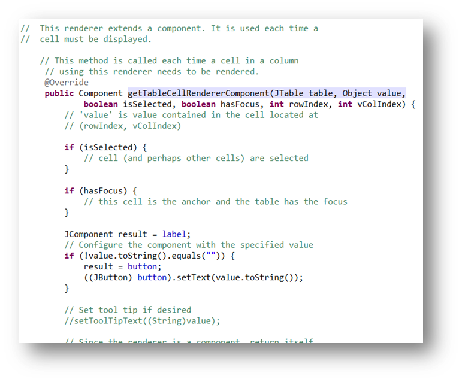
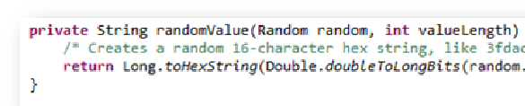

// No Comment!
/* about the worthlessness of comments in clean code */
Created by Björn Kimminich / @bkimminich
Uncle Bob dislikes comments
"Comments are, at best, a necessary evil."
Students like comments
| Professors promote comments as documentation. |
| Professors often like extensive documentation. |
| Extensive documentation leads to better grades. |
| Students love to get better grades for mindless work. |
| q.e.d. |
OpenHub also likes comments
"A high number of comments might indicate that the code is well-documented and organized, and could be a sign of a helpful and disciplined development team."
I'm in the OpenHub worst 10%?
"Across all Java projects on Open Hub, 31% all source code lines are comments. For Code Kata: Trading Card Game (TCG), this figure is 1%. This lack of comments puts Code Kata: Trading Card Game (TCG) among the lowest 10% of all Java projects on Open Hub."
SonarQube got it right!
"If the source code needs too many comments, it either means that it does not respect coding standards (naming conventions, design, etc.) or it is too complex."
This is in line with Uncle Bob
"The proper use of comments is to compensate our failure to express ourself in code."
SonarQube goes even further
"Time consuming maintenance [...] may lead to comments that are no longer up to date. Then comments go against their primary goal: they mislead the developer who will spend more time understanding the source code."
Again in line with Uncle Bob
"Inaccurate comments are far worse than no comments at all."
Geek & Poke sums it up

Bad Comments
|
|
Mumbling I

Mumbling II

Mumbling III

Mumbling IV

Redundant Comments I

Redundant Comments II

Redundant Comments III
Redundant Comments IV

Misleading Comments

Mandated Comments

Journal Comments

Noise Comments

Scary Noise

Position Markers

Closing Brace Comments I

Closing Brace Comments II

Closing Brace Comments III

Attributions and Bylines I

Attributions and Bylines II

Geek & Poke explains
Commented-Out-Code

Commented-Out-Code I

Commented-Out-Code II

Commented-Out-Code III

Nonlocal Information I

Nonlocal Information II

Too much Information

Inobvious Connection

Function Headers

Javadoc in nonpublic Code

Good Comments
- Legal Comments
- Public API Javadoc
- Informative Comments
- Explanation of Intent
- Clarification
- Warning of Consequences
- TODO Comments
Legal Comments

Public API Javadoc

Informative Comments I

Informative Comments II

Explanation of Intent I

Explanation of Intent II

Clarification I

Clarification II

Clarification III
Warning of Consequences I

Warning of Consequences II

TODO Comments I

TODO Comments II

TODO Comments III

Anti-Pattern: UnCamelCasing™
The art of splitting class/method names into Javadoc while providing zero additional information.
 There are different skill levels of this art comparable to belts in martial arts.
There are different skill levels of this art comparable to belts in martial arts.
UnCamelCasing™ Example
Skill Level White Belt

UnCamelCasing™ Example
Skill Level Green Belt

UnCamelCasing™ Example
Skill Level Brown Belt

UnCamelCasing™ Example
Skill Level Black Belt
| It is impossible to reach a black belt in UnCamelCasing™... |
| ...at least with manually writing code comments, that is! |
| The real "pro" UnCamelCasers™ go even further... |
| ...and automate the UnCamelCasing™ process entirely! |
Anti-Tool: JAutodoc
"JAutodoc is an Eclipse Plugin for automatically adding Javadoc and file headers to your source code. It optionally generates initial comments from element name by using Velocity templates for Javadoc and file headers."
// No Comment!

Thanks for your attention!
by Björn Kimminich / kimminich.de
These slides are publicly available on GitHub and Slideshare.
Credits
- reveal.js - The HTML Presentation Framework
- Geek & Poke - The Cartoons on #9 and #21
- Included real-life comment examples courtesy of
- various Kuehne + Nagel web projects
- homeworks of Nordakademie students
- OWASP ZAProxy open source project
- and yours truly.
Copyright (c) 2015 Björn Kimminich
No software engineers were harmed during or after the creation of this presentation!